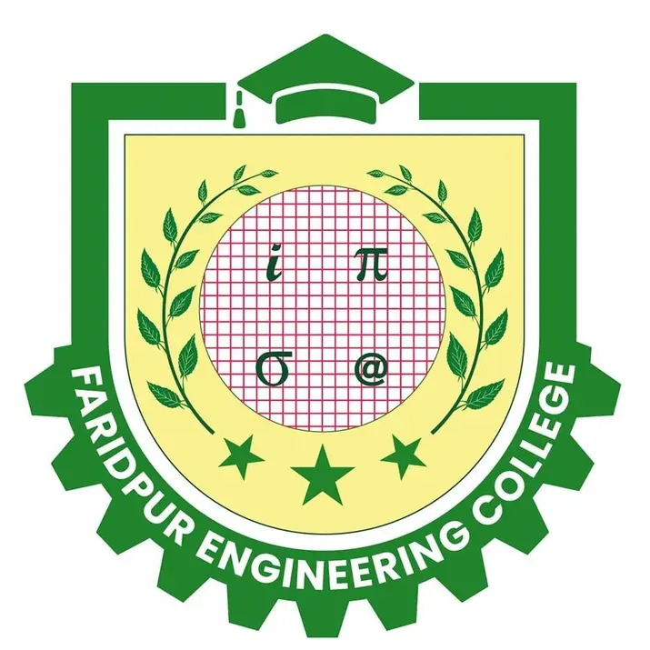

Civil engineering and academic workflow
Civil Engineering Tools
These tools belong with the civil engineering workflow because they are mainly for reports, class documents, question sheets and FEC academic formatting.
Academic Utilities
The old web development tools are now grouped here so students can find them in the right place.
FEC Cover Page Maker
Create a clean Faridpur Engineering College cover page, fill course and student details, then export it as a PDF.
Lab Report Index Generator
Generate professional lab report index pages with dynamic rows, experiment titles and A4 PDF export.
Question Builder
Build printable MCQ and question layouts for academic use with export-friendly formatting.
Study Focus
My civil engineering interest is strongest around structural analysis, drafting, report formatting and tools that make engineering coursework faster to prepare.
- Structural analysis and design practice for academic projects.
- AutoCAD drafting, plans and technical drawing cleanup.
- Printable report formats for FEC civil engineering students.

Faridpur Engineering College
The cover page and index tools keep the FEC academic style close, with fast edits and PDF output for submission-ready documents.
Working Areas
A quick map of the engineering skills and software areas I am currently practicing.
Need one of these tools?
Open the tool directly or contact me if a format needs to be adjusted.